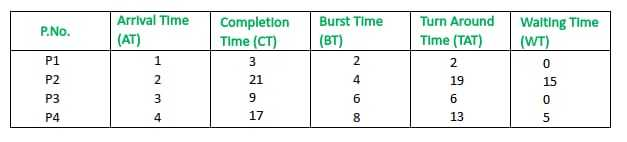

Longest Job First (LJF) is a non-preemptive scheduling algorithm. This algorithm is based on the burst time of the processes. The processes are put into the ready queue based on their burst times i.e., in descending order of the burst times. As the name suggests this algorithm is based on the fact that the process with the largest burst time is processed first. The burst time of only those processes is considered that have arrived in the system until that time. Its preemptive version is called Longest Remaining Time First (LRTF) algorithm.
Prerequisite: Process Management | CPU Scheduling
Characteristics of Longest Job First(Non-Preemptive)
- Among all the processes waiting in a waiting queue, the CPU is always assigned to the process having the largest burst time.
- If two processes have the same burst time then the tie is broken using FCFS i.e. the process that arrived first is processed first.
- LJF CPU Scheduling can be of both preemptive and non-preemptive types.
Advantages of Longest Job First(LJF)
- No other process can execute until the longest job or process executes completely.
- All the jobs or processes finish at the same time approximately.
Disadvantages of Longest Job First CPU Scheduling Algorithm
- This algorithm gives a very high average waiting time and average turn-around time for a given set of processes.
- This may lead to a convoy effect.
- It may happen that a short process may never get executed and the system keeps on executing the longer processes.
- It reduces the processing speed and thus reduces the efficiency and utilization of the system.
Longest Job First CPU Scheduling Algorithm
- Step-1: First, sort the processes in increasing order of their Arrival Time.
- Step 2: Choose the process having the highest Burst Time among all the processes that have arrived till that time.
- Step 3: Then process it for its burst time. Check if any other process arrives until this process completes execution.
- Step 4: Repeat the above three steps until all the processes are executed.
Let us consider the following examples.
Example-1: Consider the following table of arrival time and burst time for four processes P1, P2, P3 and P4.
| Processes | Arrival time | Burst Time |
|---|---|---|
| P1 |
1 ms |
2 ms |
| P2 |
2 ms |
4 ms |
| P3 |
3 ms |
6 ms |
| P4 |
4 ms |
8 ms |
The Longest Job First CPU Scheduling Algorithm will work on the basis of steps as mentioned below:
At time = 1, Available Process : P1. So, select P1 and start executing.
| Time Instance | Process | Arrival Time | Waiting Table | Execution Time | Initial Burst Time | Remaining Burst Time |
|---|---|---|---|---|---|---|
| 1-2ms | P1 | 1ms | 1ms | 2ms | 1ms |
At time = 2,
- Process P2 arrives
- As P1 is executing thus, Process P2 will wait in the waiting queue.
| Time Instance | Process | Arrival Time | Waiting Table | Execution Time | Initial Burst Time | Remaining Burst Time |
|---|---|---|---|---|---|---|
| 2-3ms | P2 | |||||
| P2 | 2ms | 0ms | 4ms | 4ms |
At time = 3,
- P1 gets executed, and process P3 arrives
- Available Process: P2, P3. So, select P3 and execute 6 ms (since B.T(P3)=6 which is higher than B.T(P2) = 4)
| Time Instance | Process | Arrival Time | Waiting Table | Execution Time | Initial Burst Time | Remaining Burst Time |
|---|---|---|---|---|---|---|
| 3-4ms | P2 | 2ms | P2 | 0ms | 4ms | 4ms |
| P3 | 3ms | 1ms | 6ms | 5ms |
At time = 4,
- Process P4 arrives,
- As P3 is executing thus, Process P4 will wait in the waiting queue
| Time Instance | Process | Arrival Time | Waiting Table | Execution Time | Initial Burst Time | Remaining Burst Time |
|---|---|---|---|---|---|---|
| 4-5ms | P2 | 2ms | P2, P4 | 0ms | 4ms | 4ms |
| P3 | 3ms | 1ms | 5ms | 4ms | ||
| P4 | 4ms | 0ms | 8ms | 8ms |
At time = 5,
- Process P3 is executing and P2 and P4 are in the waiting Table.
| Time Instance | Process | Arrival Time | Waiting Table | Execution Time | Initial Burst Time | Remaining Burst Time |
|---|---|---|---|---|---|---|
| 5-9ms | P2 | 2ms | P2, P4 | 0ms | 4ms | 4ms |
| P4 | 4ms | 0ms | 8ms | 8ms |
At time = 9,
- Process P3 completes its execution,
- Available Process : P2, P4. So, select P4 and execute 8 ms (since, B.T(P4) = 8, B.T(P2) = 4)
| Time Instance | Process | Arrival Time | Waiting Table | Execution Time | Initial Burst Time | Remaining Burst Time |
|---|---|---|---|---|---|---|
| 9-17ms | P2 | 2ms | P2 | 0ms | 4ms | 4ms |
At time = 17,
- Finally execute the process P2 for 4 ms.
| Time Instance | Process | Arrival Time | Waiting Table | Execution Time | Initial Burst Time | Remaining Burst Time |
|---|---|---|---|---|---|---|
| 17-21ms |
At time = 21,
- Process P2 will finish its execution.
- The overall execution of the processes will be as shown below:
| Time Instance | Process | Arrival Time | Waiting Table | Execution Time | Initial Burst Time | Remaining Burst Time |
|---|---|---|---|---|---|---|
| 1-2ms | P1 | 1ms | 1ms | 2ms | 1ms | |
| 2-3ms | P2 | |||||
| P2 | 2ms | 0ms | 4ms | 4ms | ||
| 3-4ms | P2 | 2ms | P2 | 0ms | 4ms | 4ms |
| P3 | 3ms | 1ms | 6ms | 5ms | ||
| 4-5ms | P2 | 2ms | P2, P4 | 0ms | 4ms | 4ms |
| P3 | 3ms | 1ms | 5ms | 4ms | ||
| P4 | 4ms | 0ms | 8ms | 8ms | ||
| 5-9ms | P2 | 2ms | P2, P4 | 0ms | 4ms | 4ms |
| P4 | 4ms | 0ms | 8ms | 8ms | ||
| 9-17ms | P2 | 2ms | P2 | 0ms | 4ms | 4ms |
| 17-21ms |
Note –
CPU will be idle for 0 to 1 unit time since there is no process available in the given interval.
Gantt chart will be as following below:

Since, completion time (C.T) can be directly determined by Gantt chart, and
Turn Around Time (TAT)
= (Completion Time) – (Arrival Time)Also, Waiting Time (WT)
= (Turn Around Time) – (Burst Time)
Therefore, final table look like,

Output :
Total Turn Around Time = 40 ms
So, Average Turn Around Time = 40/4 = 10.00 msAnd, Total Waiting Time = 20 ms
So, Average Waiting Time = 20/4 = 5.00 ms
Example-2: Consider the following table of arrival time and burst time for four processes P1, P2, P3, P4 and P5.
| Processes | Arrival Time | Burst Time |
|---|---|---|
| P1 | 0ms | 2ms |
| P2 | 0ms | 3ms |
| P3 | 2ms | 2ms |
| P4 | 3ms | 5ms |
| P5 | 4ms | 4ms |
Gantt chart for this example:

Since, completion time (C.T) can be directly determined by Gantt chart, and
Turn Around Time (TAT)
= (Completion Time) – (Arrival Time)Also, Waiting Time (WT)
= (Turn Around Time) – (Burst Time)
Therefore, the final table looks like:
| P.No | Arrival Time (AT) | Completion Time (CT) | Burst Time (BT) | Turn Around (TAT) | Waiting Time (WT) |
|---|---|---|---|---|---|
| P1 | 0 | 14 | 2 | 14 | 12 |
| P2 | 0 | 3 | 3 | 3 | 0 |
| P3 | 2 | 16 | 2 | 14 | 12 |
| P4 | 3 | 8 | 5 | 5 | 0 |
| P5 | 4 | 12 | 4 | 8 | 4 |
Output :
Total Turn Around Time = 44 ms
So, Average Turn Around Time = 44/5 = 8.8 msAnd, Total Waiting Time = 28 ms
So, Average Waiting Time = 28/5 = 5.6 ms